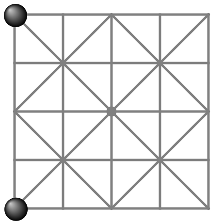

Baghchal (“goats & tigers”)

A traditional game from Nepal
Setup
- Board has 25 points (where lines meet).
- Player G has 20 goats (white), off the board.
- Player T has 4 tigers (black) on corner points.
Goal
Tigers try to capture goats. Goats try to block tigers.
Game ends
When 5 goats are captured or when tigers cannot move
Goats placing phase
- G starts by placing a goat on a point on the board.
- T moves a tiger one step along a line or captures a goat by jumping over it along a line.
Captured goats are removed and stay off the board for the rest of the game.
Repeat the above, until all goats were placed on the board.
During this phase goats are not allowed to move.
Goats moving phase
When all goats were placed, player G starts to move a goat on each turn.
Goats can move one step along a line on the board.
Player T continues to move a tiger or jump over a goat on each turn, just as before.
Jumping rules
- A tiger can only jump over one goat, landing on the empty point right behind it.
- Tigers cannot jump over tigers.
- Tigers do not have to jump.
- Goats cannot jump at all.
Strategy hints
Goats should initially be placed on safe points on the edge of the board.
Goats next to each other on the board edge protect each other.